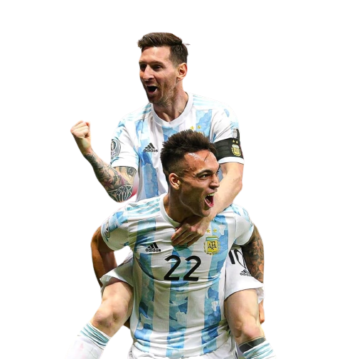

Lionel Messi lleva más de 17 años casi ininterrumpidos con la camiseta de la Selección argentina. Y después de tanto tiempo y jornadas dolorosas, finalmente le llegó el momento de alcanzar la gloria: después de sacarse la espina de ser campeón con la Albiceleste en la Copa América 2021, en Qatar 2022 tocó el cielo con las manos al ganar una Copa del Mundo, el único título que le faltaba a su impresionante carrera.


Desde su debut frente a Hungría, el 17 de agosto de 2005, y hasta el amistoso contra Curazao, el segundo después la final del Mundial de Qatar 2022 frente a Francia, Messi lleva disputados 174 partidos con la celeste y blanca, y está al tope de la lista de los futbolistas que más encuentros jugaron en el combinado nacional tras superar a Javier Mascherano en el partido contra Bolivia del 28 de junio de 2021 por la Copa América. A lo largo de su carrera participó en 5 Mundiales, récord absoluto para un futbolista argentino, y 6 Copas América.
Entre amistosos, Eliminatorias, Mundiales y Copas América, el Diez lleva convertidos nada menos que 101 goles en la Selección y ya no solamente es el máximo artillero histórico del combinado nacional por delante de Gabriel Batistuta, sino que superó a Pelé y es el jugador con más goles en la historia de una selección sudamericana.
Leo repartió 54 asistencias a lo largo de su trayectoria en el combinado nacional.
Titulos:
- Copa America
- Finalissima
- Copa del mundo